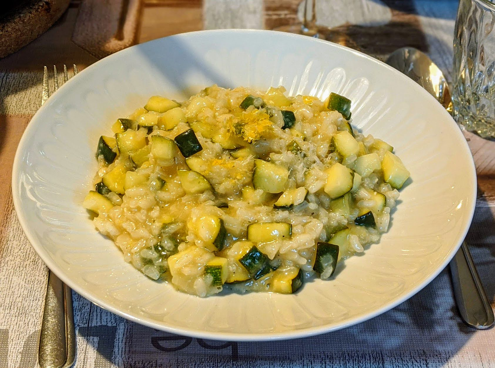

Risotto aux courgettes et au citron

Pour 5 personnes :
- Deux gros oignons
- Deux grosses gousses d'ail
- 400g de riz à risotto
- 800g de courgettes
- 2 citrons bio
- Un verre de vin blanc
- 1,5L de bouillon de légumes
- 100g de parmesan
- Une bonne cuillère à soupe d'huile d'olive à la truffe, ou trois-quatre cuillères à soupe de crème
- Sel, poivre, beurre, huile d'olive
- Éplucher et émincer les oignons. Les faire revenir dans une quantité généreuse de beurre et d'huile d'olive dans une grande poêle (ou grande casserole pas trop haute). Pendant ce temps, faire chauffer le bouillon et le laisser à feu doux pour qu'il frémisse.
- Éplucher et émincer l'ail, le rajouter lorsque les oignons commencent à être translucides. Lorsque le tout commence à dorer, ajouter le riz, et lorsqu'il devient translucide, ajouter le vin. Saler légèrement, poivrer généreusement.
- Commencer à faire cuire le risotto : garder à feu moyen, et à chaque fois que le liquide est absorbé, ajouter une louche de bouillon. Mélanger régulièrement.
- Pendant que ça cuit, laver, zester et presser les citrons. Ajouter le jus de citron dans la casserole dès qu'il est prêt, au début de la cuisson.
- Pendant que ça cuit, laver et couper les courgettes en dés. Les ajouter vers la fin de la cuisson, lorsqu'il ne reste plus que deux ou trois louches.
- À la toute fin, ajouter la moitié du zeste et du parmesan râpé (servir le reste à part pour les gens qui en veulent plus), et l'huile à la truffe ou la crème. Mélanger, rectifier l'assaisonnement, servir chaud.